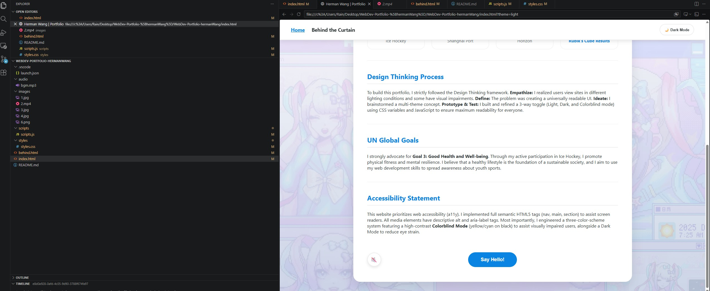
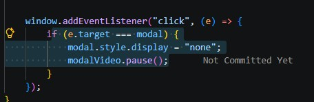

1. Developer Tools & Code Screenshots
Throughout the creation of this portfolio, VS Code was my sole developer tool and absolute essential companion. I heavily utilized its built-in features to write my HTML, CSS, and JavaScript. The Live Server extension was crucial for instantly viewing my visual changes, and the built-in error highlighting helped me quickly find syntax mistakes. When I was trying to figure out why my Lightbox modal was not working, I relied entirely on VS Code to carefully trace my logic.


2. Explanation of Challenges
Design Challenges: To ensure an excellent user experience, I recognized that users have varying visual preferences and accessibility needs. I challenged myself to build a 3-color scheme system using CSS variables. Creating the Colorblind Mode was tough, but I managed to use JavaScript to update the class name on the body tag so the colors would dynamically change. I also made sure to add aria-label tags to my video so screen readers can understand it.
JavaScript Challenges: The biggest technical challenge I faced was with my Lightbox feature. Initially, my JavaScript only selected images. When I clicked my Horizon gameplay video, nothing happened! It was a frustrating bug. I realized I needed to select videos. I updated my code to use an if/else statement checking the tag name. If the clicked element is a video, it hides the modal image and shows the modal video instead, and even automatically plays it.
3. Learning Takeaways
This journey deeply enhanced my understanding of how HTML structure, CSS Flexbox and Grid layouts, and JavaScript interactivity connect. By building everything from scratch, I successfully shifted my mindset from merely following instructions to thinking like a true developer who prioritizes accessibility, performance, and user empathy. I am very proud of the extra features I built into this project, and it proved to me that I can build complex websites just using VS Code.